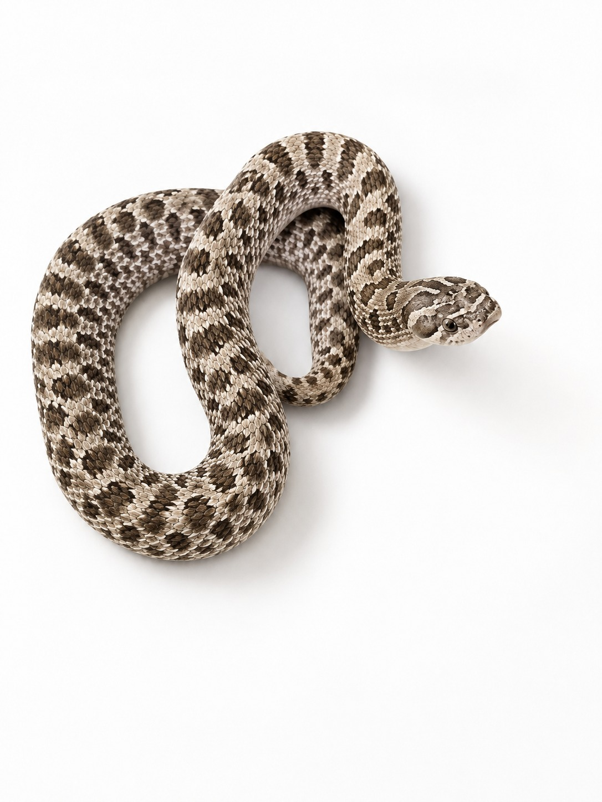

Especie: Western Hognose
Sexo: Hembra
Morph: Arctic, Het Toffee
Año: 2025
Peso: 100 g
Origen: CODE
Estado: Juvenil
Pieza clave para trabajar la línea de color Arctic combinada con colores pastel o canela.
A nivel visual, se enfoca en la limpieza del color manteniendo el diseño natural de la especie.
Forma parte del Archivo Genético CODE como registro documental permanente.